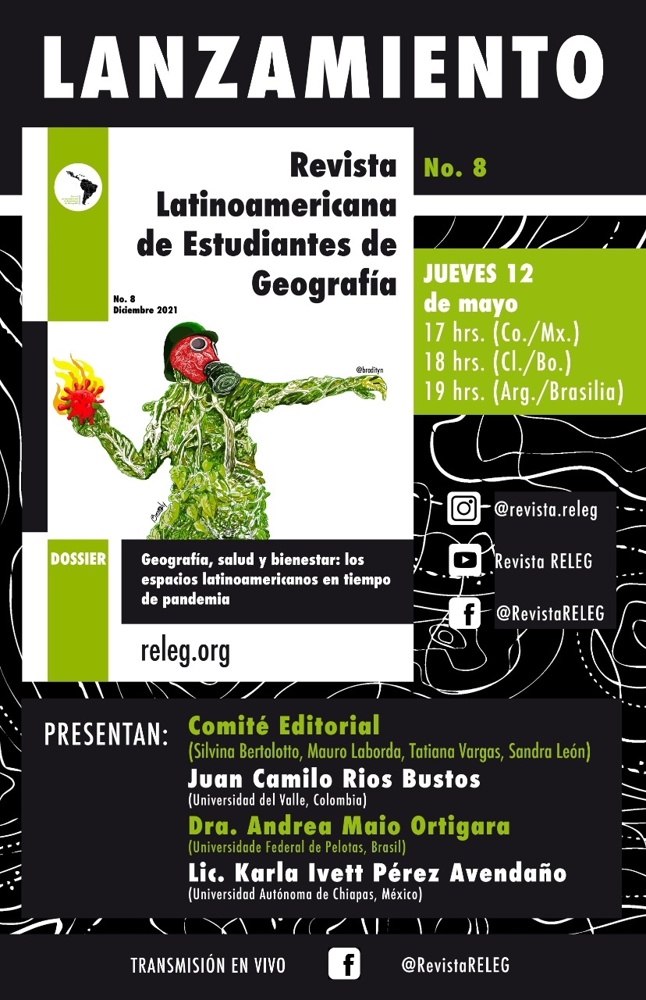

Presentación
Número actual
Archivo
Convocatorias
Comité Editorial
Normas editoriales
Historia y estadísticas
Presentaciones
Contacto
Portugués

Autor de la imagen: Brady Izquierdo
https://www.instagram.com/bradityn/
No. 8 (2021)
1
Editorial
DOSSIER
Geografía, salud y bienestar: los espacios latinoamericanos en tiempo de pandemia
8
As lutas pelo comum na pandemia: o caso da Estrada de Ferro Carajás no Maranhão - BR
Victoria Ferreira Oliva
22
Análisis espaciotemporal de las dinámicas del Covid-19 en la ciudad de Bogotá desde su introducción hasta agosto del 2020
Mateo Martinez Bocanegra
37
La ayuda mutua frente a la pandemia en la ruralidad colombiana: estudio de caso La Soledad-Cali, Valle del Cauca
Juan Camilo Ríos Bustos
51
Soacha durante la pandemia. La ciudad periférica en tiempos de crisis
Michael Steven Martínez Munar
Edwin Giovanny Ruíz Rojas
64
“A cobertura que camufla o coronavírus”: uma leitura em metáforas
Pedro Medina Bernardes Bastos
Tadeu Asevedo Porto Maia
Adriana Caúla
78
El lado oculto de la agricultura moderna. Entrevista a Walter A. Pengue
Angela Ailen Belizón
Mariana Rocio Giangioble Puebla
DINÁMICAS URBANAS Y EXCLUSIÓN SOCIAL
89
Da espoliação à autofagia urbana: a geografia sacrificial das metrópoles brasileiras
VISIONES GEOPOLÍTICAS DE AMÉRICA LATINA
104
Sustitución de cultivos de uso ilícito en el Departamento de Nariño, Colombia. Una perspectiva geopolítica
Samir Tarapués Chacón
PLANIFICACIÓN Y GESTIÓN DEL TERRITORIO EN AMÉRICA LATINA
118
Desestructuración del territorio en Morococha, antigua área minera, por efecto de la “nueva minería”
Iván Delgado Pugley
GESTIÓN DEL RIESGO Y CAMBIO CLIMÁTICO EN AMÉRICA LATINA
135
Causas de la sequía de 2020 en la Laguna de Metztitlán, Hidalgo
Diego Antonio Caballero García
SECCIÓN LITERARIA
150
Desfalleciendo con fragmentos temporales
Clara Charlotte Valdez López
154
Cidade
Guido Lins Lopes Bragioni
158
Virhus
José Enrique Cordero Cordero
162
Normas editoriales